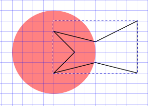
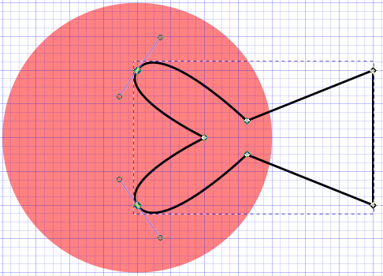
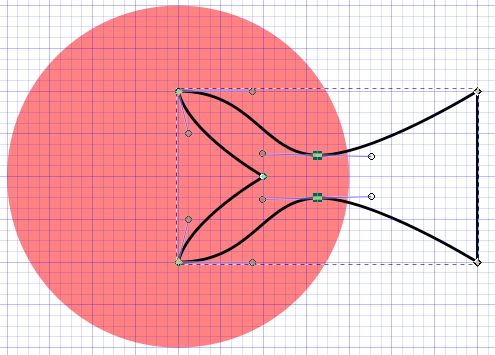
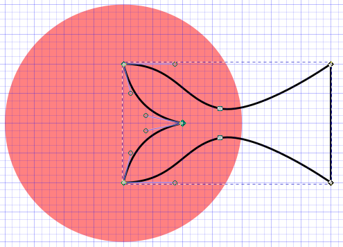
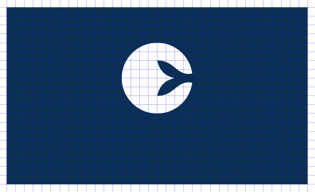
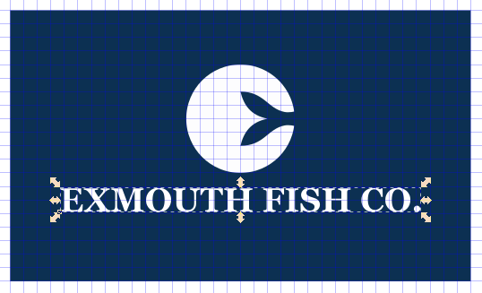
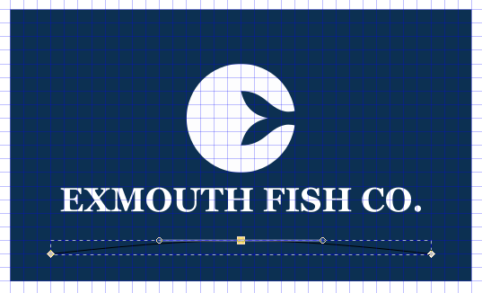
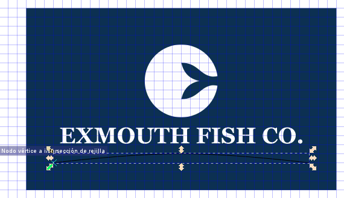

18. Exmouth Fish Co logo¶
We open a new document with Inkscape.
In the
File... Document Properties...menu under the Grids tab we add a new rectangular grid to the document and change the following parameters.Grid units in millimeters.
X spacing and Y spacing in 1 millimeter.
Primary line every 4.
Grid on, visible, and snap to visible grid lines only.

When we're done, close the window and we'll see a rectangular grid in the new Inkscape document.

This grid will help us draw the points symmetrically.
For the grid to work we must make sure to activate the corresponding button on the right toolbar.
Next we will draw a transparent red circle with a diameter of 8 grid squares (32 millimeters).

To continue we draw with the tool to draw lines and curves
 the following closed figure resembling a fish tail. We do not worry much about the position of the points, which we will later put in their place.
the following closed figure resembling a fish tail. We do not worry much about the position of the points, which we will later put in their place.We zoom in on the figure and with the tool to edit nodes
 we place the points of the fish tail in its place as shown in the following image.
we place the points of the fish tail in its place as shown in the following image.
Now it is necessary to curve the lines to achieve the fish tail effect. To do this, we select the two nodes on the left and click on the button to smooth the selected nodes and then on the button to convert the selected nodes into corners.
We move the handles so that they adjust to the position shown in the following figure.

We continue smoothing the lines corresponding to the central nodes. This time we select the two nodes and click on the button to make the selected nodes symmetrical and we will have the following drawing.
We move the handles to adjust the drawing.

To finish drawing the fishtail, we select the central node, soften it, and make it a corner. We adjust the handles as shown in the figure and we have finished the fish tail with a symmetrical drawing.
We copied the logo at the top of this page in Inkscape so that we could copy the background color of the logo into the fishtail. We will also remove the black border.

We draw a rectangle 136 millimeters wide by 80 millimeters high. We move the rectangle to the background with the menu
Object... Go down to backgroundand we place it behind the previous drawings.Now we can change the color of the circle to white without transparency.
To continue we will write the text "EXMOUTH FISH CO." in white, size 28 points and Georgia font. For now we are not going to try to make the font look similar.
To curve the letters we must draw a path with the tool to draw lines and curves
 and then curve the center point.We move the curved line to the center and move it up to the third grid mark from the bottom.
Now we select the text and the curved line and select the
Text... Put on pathmenu tool
The text is not exactly in the center of the line. To move it to the right we select the text with the text tool and place the cursor before the first letter "E". Now we can press the keys Alt + cursor right to move the text to the right to the desired position in the center of the line.
With the key combination Alt + cursor up we can move the text up as shown in the image.

To finish, we select only the bottom curved line and move it to the bottom with the
Object... Move to Bottommenu so that it cannot be seen.In the
File... Document Properties...menu, in the Grids tab, we remove the display of the grid and we already have the finished logo.